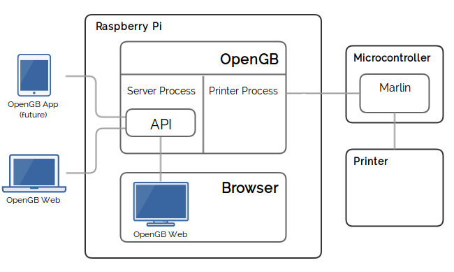

# 3D Printer Control
# with
# Python
### SyPy July 2016
# James Stewart
## @amorphic
## jimter.net
## sparkcc.org
# Overview
|
## 3D Printing Process Control Limitations |
## OpenGB Goals Architecture Python! |
## Future Other Applications Development |
# How a 3D Printer Works
### Solid Plastic
### **⇓**
### Liquid Plastic
### **⇓**
### Solid Plastic
# How a 3D Printer Works
## Heaters ⇐
## Temp Sensors ⇒
## Stepper Motors ⇐
## Limit Switches ⇒
Microcontroller
# How a 3D Printer is Controlled
Microcontroller
## ⇒ Dot-Matrix LCD
## ⇐ Jog Dial
## ⇐ SD Card
# How a 3D Printer is Controlled
## --LCD + Jog Dial Set Temp Video Here--
# How a 3D Printer is Controlled
## --LCD + Jog Dial Print File Video Here--
# GCode
G1 X93.087 Y79.875 E17.81040
G1 X105.300 Y79.874 E18.23090
G1 X105.826 Y79.870 E18.24901
G1 X106.156 Y79.869 E18.26038
G1 X106.156 Y79.200 E18.28341
G1 X119.456 Y79.200 E18.74134
G0 F10200 X119.056 Y79.600
G1 F600 X119.056 Y118.600 E20.08412
G1 X118.656 Y118.600 E20.09790
G1 X118.656 Y120.200 E20.15299
G1 X106.556 Y120.200 E20.56959
G1 X106.556 Y119.731 E20.58574
G1 X106.513 Y119.732 E20.58722
G1 X106.421 Y119.731 E20.59039
G1 X105.839 Y119.732 E20.61043
G1 X93.700 Y119.731 E21.02838
# Limitations
## Cumbersome input
## Limited output
## SD Card sucks
## Updating firmware
# OpenGB
# OpenGB Aims
|
## Interface Approachable Feature-rich |
## Network Gcode uploads Print monitoring |
## Codebase FOSS API Documentation Easy deploy |
# Printer Control Revisited
Microcontroller
## ⇒ Dot-Matrix LCD
## ⇐ Jog Dial
## ⇐ SD Card
## ⇔ Serial
# OpenGB Architecture
# Single-board Computer
## Raspberry Pi
## Touchscreen
(or any computer
running Linux)
# Backend Application
## Python
## Multi-process
# Printer Process
## Printer interface
## Gcode exec
## Agnostic
# Server Process
## Websocket API
## Database
## Filesystem
# Frontend Application
### Javascript (Vue.js)
### Optional
### Distinct
### Local == Remote
# Tornado
## Asynchronous
## Self-contained
## Event loop
# Periodic Callbacks
# Initialize printer queues.
to_printer = multiprocessing.Queue()
from_printer = multiprocessing.Queue()
...
# Create event loop and periodic callbacks
main_loop = tornado.ioloop.IOLoop.instance()
printer_event_processor = tornado.ioloop.PeriodicCallback(
lambda: process_printer_events(from_printer), 10)
counter_updater = tornado.ioloop.PeriodicCallback(
lambda: update_counters(), 60000)
# Rock and roll.
printer_event_processor.start()
counter_updater.start()
main_loop.start()
# Websockets
# Backend handler is always required.
handlers = [(r"/ws", WebSocketHandler, {"to_printer": to_printer})]
# Frontend-specfic handlers added if required.
try:
handlers += get_frontend_handlers(options.frontend)
except IOError as e:
LOGGER.exception(e)
LOGGER.warn('No frontend will be served.')
app = Application(handlers=handlers, debug=options.debug)
httpServer = tornado.httpserver.HTTPServer(app)
httpServer.listen(options.http_port)
# WebSocketHandler
class WebSocketHandler(tornado.websocket.WebSocketHandler):
def open(self):
LOGGER.info('New connection from {0}'.format(
self.request.remote_ip))
CLIENTS.append(self)
def on_close(self):
LOGGER.info('Connection closed to {0}'.format(
self.request.remote_ip))
CLIENTS.remove(self)
def on_message(self, message):
# Process message
# Generate response if required
self.write_message(response.json)
# JSON-RPC 2.0
### jsonrpc.org
# JSON-RPC 2.0
## Request
{
"jsonrpc": "2.0",
"id": 1,
"method": "set_temp",
"params": {
"bed": 105,
"nozzle1": 206,
"nozzle2": 203
}
}
# JSON-RPC 2.0
## Response
{
"jsonrpc": "2.0",
"id": 1,
"result": true
}
# JSON-RPC 2.0
## Event
{
"jsonrpc": "2.0",
"event": "temp",
"params": {
"bed_current": 203,
"bed_target": 105,
"nozzle2_target": 203,
"nozzle1_current": 104,
"nozzle2_current": 108,
"nozzle1_target": 206
}
}
# Tornado + JSON-RPC
from jsonrpc import JSONRPCResponseManager, Dispatcher
# MessageHandler
class MessageHandler(object):
def __init__(self, to_printer):
self._to_printer = to_printer
def set_temp(self, bed=None, nozzle1=None, nozzle2=None):
self._to_printer.put(json.dumps({
'method': 'set_temp',
'params': {
'bed': bed,
'nozzle1': nozzle1,
'nozzle2': nozzle2,
}
}))
return True
# ORM
## SQLite + Peewee